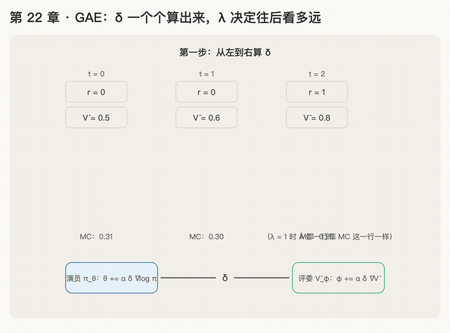
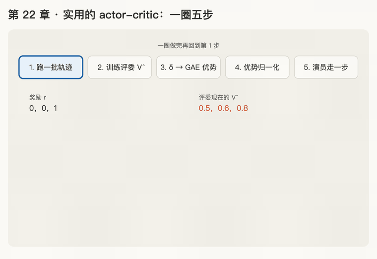

第 22 章 · Actor-Critic、优势函数与 GAE：演员演，评委打分
本地运行
git clone https://github.com/wikieden/rl-from-scratch
cd rl-from-scratch/code/notebooks
pip install jupyterlab torch numpy
jupyter lab ch22_actor_critic_gae.ipynb也可以下载后直接用 VS Code 打开 .ipynb 运行。需要 GPU 的章节在 Colab 里选「代码执行程序 → 更改运行时类型 → GPU」。
本章回答：baseline 换成一个会学的价值网络，会得到什么算法？"优势"是什么意思？TD 误差怎么当成优势用？GAE 的 λ 在调什么？
讲解日期：2026-11-13 · 上一章：第 21 章 baseline 与 reward-to-go · 下一章：第 23 章 从 TRPO 到 PPO
对应原文：CS 285 第 6 讲（lec-06.txtL22–L47 状态价值与 baseline、L100–L118 basic / online actor-critic、L140–L200 Critics and baselines、GAE）；Sutton & Barto §13.5 Actor–Critic Methods（L25742–L25874，式 13.12–13.14，算法框 L25806）；GAE 论文 Schulman et al. 2016（papers/gae-1506.02438.txtL388–L470，式 16）
本章缩写：actor：演员（策略 \(\pi_\theta\)）；critic：评委（价值函数 \(\hat V\)）；A = Advantage（优势）；\(A^\pi(s, a) = Q^\pi(s, a) - V^\pi(s)\)；GAE = Generalized Advantage Estimation（广义 / 优势 / 估计）；λ：希腊字母 lambda（读"兰姆达"），GAE 的权衡参数；A3C = Asynchronous Advantage Actor-Critic（异步 / 优势 / 演员–评委）。全部缩写见 附录 · 缩写与术语表
讲解
第一步：优势 A(s, a)：这个动作比"平常"好多少（2026-11-13）
第 21 章：用 \(G - b\) 代替 G，"比平常好多少"。最好的"平常"是什么？
在状态 s，"平常"就是按策略走的平均回报 \(V^\pi(s)\)（第 7 章）；"做了动作 a"的平均回报是 \(Q^\pi(s, a)\)。两者相减（CS 285 第 6 讲 L22–L47）：
这叫优势 advantage：在 s 做 a，比按策略随便做平均好多少。
- A > 0：这个动作比平常好，该推高；
- A < 0：比平常差，该压低；
- 按策略的平均：\(\sum_a \pi(a \mid s)\,A^\pi(s, a) = V - V = 0\)（第 7 章第四步：v 是 q 的加权平均）。
用第 7 章的机器人：低电时 \(q_\pi(\text{充电}) = 14.245\)，\(q_\pi(\text{搜索}) = 13.511\)，\(v_\pi(\text{低电}) = 13.869\)：
| 动作 | q | A = q − v |
|---|---|---|
| 充电 | 14.245 | +0.376 |
| 搜索 | 13.511 | −0.358 |
充电比平常好，搜索比平常差：优势直接告诉你该往哪边调策略。
策略梯度换成优势：
这是"理想情况"：真实的 A 方差最小。问题是 A 不知道，要估。
一句话：优势 \(A = Q - V\) 是"这个动作比平常好多少"，按策略平均为 0；策略梯度乘 A 最理想，但 A 要估出来。
第二步：评委来打分：TD 误差就是优势的估计（2026-11-13）
要估 A，先要有 V。用第 17 章的方法，训练一个价值网络 \(\hat V_\phi(s)\)（参数 φ，读"phi"）：这就是评委 critic。策略 \(\pi_\theta\) 是演员 actor。
类比：演员和评委。 演员上台表演（按策略做动作），评委看完打分（这一步比预期好还是差）；演员根据评委的反馈改进表演，评委也在不断校准自己的打分标准。
怎么用 V 估 A：\(Q(s, a)\) 是"这一步的奖励 + 下一个状态的价值"的平均（第 7 章第四步），用一个样本代替：
这正是第 15 章的 TD 误差 δ！它回答的是"走了一步以后，发现比评委原来预期的好了多少"，正好就是"优势"的意思。
一步 actor-critic（式 13.12–13.14，L25793–L25795；算法框 L25806）：每走一步：
- 算 \(\delta = r + \gamma\hat V(s') - \hat V(s)\)；
- 评委更新：\(\phi \leftarrow \phi + \alpha_\phi\,\delta\,\nabla\hat V_\phi(s)\)（第 17 章的半梯度 TD，让 V 更准）；
- 演员更新：\(\theta \leftarrow \theta + \alpha_\theta\,\delta\,\nabla\log\pi_\theta(a \mid s)\)（第 20 章，把 G 换成 δ）。
和 REINFORCE 比（CS 285 第 6 讲 L140–L158）：
| REINFORCE + baseline | Actor-Critic（用 δ） | |
|---|---|---|
| 乘子 | \(G_t - b\) | \(\delta_t = r + \gamma\hat V(s') - \hat V(s)\) |
| 要等终局吗 | 要 | 不要，走一步就能更新 |
| 方差 | 大 | 小 |
| 偏差 | 无 | 有（评委不准时） |
又是第 15 章那个 MC vs TD 的权衡：用整局回报无偏但抖，用一步 TD 稳但偏。
一句话：评委 \(\hat V\) 给每一步打分，TD 误差 δ 就是优势的估计；演员按 δ 调策略、评委按 δ 调自己；不用等终局、方差小，但评委不准时有偏。
第三步：在两个极端之间：n 步与 GAE（2026-11-13）
两个极端（CS 285 第 6 讲 L159–L166）：
- 一步 TD：\(\hat A_t = \delta_t\)。方差小，但完全依赖评委 \(\hat V\) 准不准；
- MC：\(\hat A_t = G_t - \hat V(s_t)\)。无偏，但方差大。
能不能在中间？先看一个事实（第 15 章附录：MC 误差 = TD 误差之和）：
MC 的优势 = 把后面所有 δ 打着折加起来；一步 TD 只取第一个 δ。中间的做法：越远的 δ 权重越小。
GAE（GAE 论文式 16，L388–L437；CS 285 第 6 讲 L167–L187）：再乘一个 λ（0 到 1 之间）：
- λ = 0：只剩 \(\delta_t\)，就是一步 TD（L447："GAE(γ, 0)"）；
- λ = 1：\(\sum\gamma^l\delta_{t+l}\)，就是 MC 优势（L448："GAE(γ, 1)"）；
- λ 在中间（常用 0.95）：近处的 δ 多算一点，远处的少算一点，"大部分时候早点截断"（L177："Mostly prefer cutting earlier (less variance)"）。
倒着算最方便（又是第 3 章那个循环）：\(\hat A_t = \delta_t + \gamma\lambda\,\hat A_{t+1}\)。
用数字走一遍：一局 3 步，奖励 [0, 0, 1]，评委的估计 \(\hat V\) = [0.5, 0.6, 0.8]，结束后是 0，γ = 0.9。
先算 δ：
| t | \(r_t + \gamma\hat V(s_{t+1}) - \hat V(s_t)\) | δ |
|---|---|---|
| 0 | \(0 + 0.9 \times 0.6 - 0.5\) | 0.04 |
| 1 | \(0 + 0.9 \times 0.8 - 0.6\) | 0.12 |
| 2 | \(1 + 0 - 0.8\) | 0.20 |
再按不同 λ 倒着加：
| \(\hat A_0\) | \(\hat A_1\) | \(\hat A_2\) | |
|---|---|---|---|
| λ = 0（一步 TD） | 0.04 | 0.12 | 0.20 |
| λ = 0.95 | 0.289 | 0.291 | 0.20 |
| λ = 1 | 0.31 | 0.30 | 0.20 |
| MC：\(G_t - \hat V(s_t)\) | 0.81 − 0.5 = 0.31 | 0.9 − 0.6 = 0.30 | 1 − 0.8 = 0.20 |
λ = 1 那一行和 MC 那一行完全一样，验证了上面的公式。λ = 0 时第 0 步的优势只有 0.04（评委觉得这一步没什么），λ = 1 时是 0.31（最后赢了，功劳也分给第 0 步）。
一句话：GAE = 把后面的 δ 按 \((\gamma\lambda)^l\) 加权求和；λ = 0 是一步 TD（稳但偏），λ = 1 是 MC（无偏但抖），常用 0.95。
第四步：实践中的 actor-critic：一批数据、两个网络（2026-11-13）
CS 285 第 6 讲 Part 4（L121–L139）把实际能用的版本叫"on-policy actor-critic，也就是真正能用的策略梯度"：
循环：
1. 用当前策略 π_θ 跑一批轨迹（比如 N 局）
2. 评委：用这批数据训练 V̂_φ（回归目标：reward-to-go 或 bootstrapped 目标）
3. 用 V̂ 算每一步的 δ，再按 GAE 算优势 Â
4. 优势归一化：一批 Â 减均值、除标准差（L194–L195："center the advantages"）
5. 演员：θ ← θ + α · 平均[Â · ∇log π_θ(a|s)]
L199–L201 的预告："This is the first part of implementing PPO"：PPO 的第一半就是这个，另一半是下一章要讲的"稍微不同的梯度估计"。
几个实践要点：
- 两个网络：演员和评委可以是两个独立网络，也可以共享前面几层、各接一个"头"；
- 并行采样：一步 actor-critic 只用一条经历更新，太抖；A3C（
papers/a3c-1602.01783.txt）让很多个环境副本并行跑，凑成一批再更新（lec-06.txtL114–L118）； - CS 285 HW2 §5 就是在第 21 章的代码上加 GAE，扫 λ = 0、0.95、0.98、0.99、1，在 LunarLander 上比较。
一句话：实用的 actor-critic = 跑一批 → 训练评委 → GAE 算优势 → 归一化 → 演员走一步；这就是 PPO 的前一半。
动画演示：δ 一个个算出来，λ 决定往后看多远

可交互版：animations/l22-actor-critic-gae.html（要能点按钮、拖滑块，需要用本地服务打开，见 animations/README.md"跑起来看"）。
怎么看：
- 一局 3 步，上面是奖励，中间是评委的打分 \(\hat V\)，每帧算出一个 δ（第三步的表）；
- 然后从右往左倒着累加 \(\hat A_t = \delta_t + \gamma\lambda\hat A_{t+1}\)，箭头上标着权重 γλ；
- 滑块拖 λ：0 时每一步只看自己的 δ，1 时和 MC 那一行重合（第三步）；
- 右边是"演员 / 评委"示意图：δ 同时送给两边，演员调 π，评委调 V（第二步）。
动画演示 2：实用 actor-critic 的一圈五步（第四步）

可交互版：animations/l22b-ac-loop.html（无滑块，用 → 单步）
怎么看：
- 五个框对应第四步伪代码的 1–5。数字用附录代码对照里那一小段：奖励 [0, 0, 1]，V̂ = [0.5, 0.6, 0.8]，γ = 0.9。
- 第 2 框评委的回归目标用 reward-to-go（0.81、0.9、1）；第 3 框先算 δ（0.04、0.12、0.2），再按 λ = 0.95 合成 GAE（0.289、0.291、0.2）。
- 第 4 框减均值、除标准差，得到 0.68、0.73、−1.41：同一批里有正有负；第 5 框正的推高、负的压低。
练习与作答记录
题 1：某状态 \(V = 5\)，三个动作的 Q 是 7、5、2，策略各选 1/3。写出三个优势，并验证按策略的平均是 0。
作答：（待作答）
题 2：奖励 r = 1，\(\hat V(s) = 2\)，\(\hat V(s') = 3\)，γ = 0.5。算 δ。按这个 δ，演员会把刚才的动作推高还是压低？
作答：（待作答）
题 3：GAE 的 λ 取 0 和取 1 分别相当于什么？各自的优缺点是什么？
作答：（待作答）
口诀
优势 = Q − V：比平常好多少，按策略平均为零；
演员做动作，评委打分；TD 误差 δ 就是优势的估计；
GAE：后面的 δ 按 γλ 打折相加；λ = 0 是一步 TD，λ = 1 是 MC；
跑一批、训评委、算 GAE、归一化、演员走一步：PPO 的前一半。
本章复习卡片
- R38（优势 \(A = Q - V\)；TD 误差 δ 是优势的估计；actor-critic 的两个更新）
- R39（GAE：\(\hat A_t = \sum_l(\gamma\lambda)^l\delta_{t+l}\)，倒着算 \(\hat A_t = \delta_t + \gamma\lambda\hat A_{t+1}\)；λ = 0 / 1 的含义）
附录 · 延伸阅读
留给以后深入学习用，不影响本章主线。★ 是建议先读的。
推荐阅读
| 读什么 | 读哪里 | 读它为了什么 |
|---|---|---|
| ★ CS 285 第 6 讲 | cs285-slides/lec-06.txt L22–L200 |
状态价值与 baseline、basic / online actor-critic、Critics and baselines、GAE、"first part of PPO" |
| ★ GAE 论文 | papers/gae-1506.02438.txt L388–L470（式 16，GAE(γ, 0) 与 GAE(γ, 1) 在 L447–L448） |
GAE 原文；§6 在 3D 机器人行走上的实验 |
| Sutton & Barto §13.5 | books/sutton-barto-RLbook2020.txt L25742–L25874（式 13.12–13.14，算法框 L25806） |
一步 actor-critic 的原文 |
| A3C 论文 | papers/a3c-1602.01783.txt §4 |
并行 actor-critic（第四步第 2 点） |
| CS 285 HW2 §5 | cs285-homeworks/hw2.txt L383–L411 |
实现 GAE、扫 λ 的实验 |
| CS 285 第 6 讲 Part 5 | lec-06.txt L202–L266 |
off-policy actor-critic 与重参数化（SAC 的前身，HW3 第二部分） |
数学原理
- δ 是优势的无偏估计（若评委准确）：\(\mathbb{E}[\delta_t \mid s_t, a_t] = \mathbb{E}[r_t + \gamma V^\pi(s_{t+1}) \mid s_t, a_t] - V^\pi(s_t) = Q^\pi(s_t, a_t) - V^\pi(s_t) = A^\pi(s_t, a_t)\)。
- GAE 的两个端点：\(\text{GAE}(\gamma, 0) = \delta_t\)；\(\text{GAE}(\gamma, 1) = \sum_l\gamma^l\delta_{t+l} = \sum_l\gamma^l r_{t+l} - \hat V(s_t)\)（中间的 \(\hat V\) 两两抵消，望远镜求和 telescoping）。
- λ 的作用和 γ 很像（
lec-06.txtL182："similar effect as discount!"）：都是让远处的信号权重变小、降低方差、引入偏差；γ 改变的是"目标"本身，λ 只改变"怎么估"。 - 评委的训练：最小化 \(\sum_t(\hat V_\phi(s_t) - y_t)^2\)，y 可以是 reward-to-go（MC）或 \(r_t + \gamma\hat V(s_{t+1})\)（bootstrapped），也可以是 \(\hat A_t + \hat V(s_t)\)（"GAE 回报"，PPO 常用）。
公式清单
| 公式 | 意思 |
|---|---|
| \(A^\pi(s, a) = Q^\pi(s, a) - V^\pi(s)\) | 优势 |
| \(\delta_t = r_t + \gamma\hat V(s_{t+1}) - \hat V(s_t)\) | TD 误差 = 一步优势估计 |
| \(\theta \leftarrow \theta + \alpha\,\delta\,\nabla\log\pi_\theta(a \mid s)\)；\(\phi \leftarrow \phi + \alpha\,\delta\,\nabla\hat V_\phi(s)\) | 一步 actor-critic（式 13.12–13.14） |
| \(\hat A_t^{\text{GAE}} = \sum_{l\ge0}(\gamma\lambda)^l\delta_{t+l}\) | GAE（论文式 16） |
| \(\hat A_t = \delta_t + \gamma\lambda\hat A_{t+1}\) | 倒着算 |
代码对照：把本章的数字用代码算一遍
代码在
cs285-deep-rl/solutions/chapter-code/ch22_actor_critic_gae.py，测试tests/test_ch17_24.py（检查 λ = 0 等于 δ、λ = 1 等于 MC 优势）。
同一章的 Jupyter notebook：cs285-deep-rl/solutions/chapter-code/notebooks/ch22_actor_critic_gae.ipynb（讲解和代码放在一起，一格一格边读边跑；代码都写在格子里，Colab 也能直接打开）。
bash cd cs285-deep-rl/solutions/chapter-code uv run python ch22_actor_critic_gae.py
| 讲义 | 代码 | 跑出来 |
|---|---|---|
| δ | td_errors([0, 0, 1], [0.5, 0.6, 0.8, 0.0], 0.9) |
[0.04, 0.12, 0.2] |
| GAE λ = 0 / 0.95 / 1 | gae(r, v, 0.9, lam) |
[0.04, 0.12, 0.2] / [0.289, 0.291, 0.2] / [0.31, 0.3, 0.2] |
| MC 优势 | mc_advantage(r, v, 0.9) |
[0.31, 0.3, 0.2] |
关键几行：
delta = r + gamma * v[1:] - v[:-1] # 一次算出所有 δ（v 比 r 多一个：结束后的 0）
for d in reversed(delta):
A = d + gamma * lam * A # 倒着累加
代码里才看得到的：values 要比 rewards 多一个元素：最后一个状态之后的价值（结束了就是 0，没结束是被截断时评委的估计）。HW2 的 _estimate_advantage 里，这个"结束了填 0"由 terminals 数组控制，弄错会让最后一步的 δ 错得离谱。
自己改一改（不影响练习答案）：
- 换 λ：
gae(r, v, 0.9, 0.5)→ [0.135, 0.21, 0.2]；λ = 0.9 → [0.268, 0.282, 0.2]。λ 从 0 往 1 走，优势从单步 δ 慢慢变成 MC 的结果。 - γ 换成 0.99：δ 变成 [0.094, 0.192, 0.2]，GAE（λ = 0.95）变成 [0.451, 0.38, 0.2]。